SPeeD GAME · 4 direzioni di stile
Disegni di prova (non è ancora l'app): telefono 390×844. Le foto dei giochi e gli avatar sono quelli veri.
Prima schermata
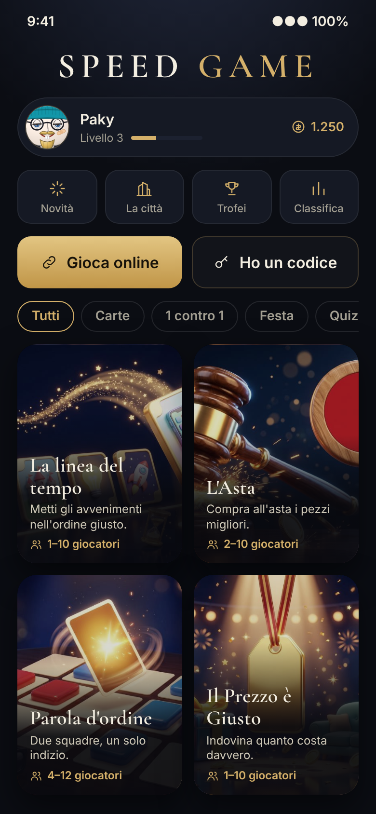
1 · Notte di lusso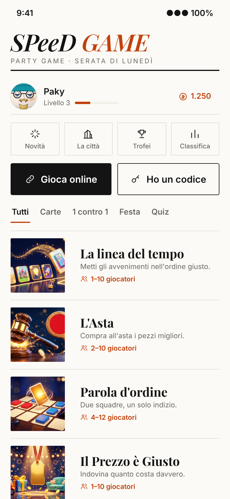
2 · Chiaro editoriale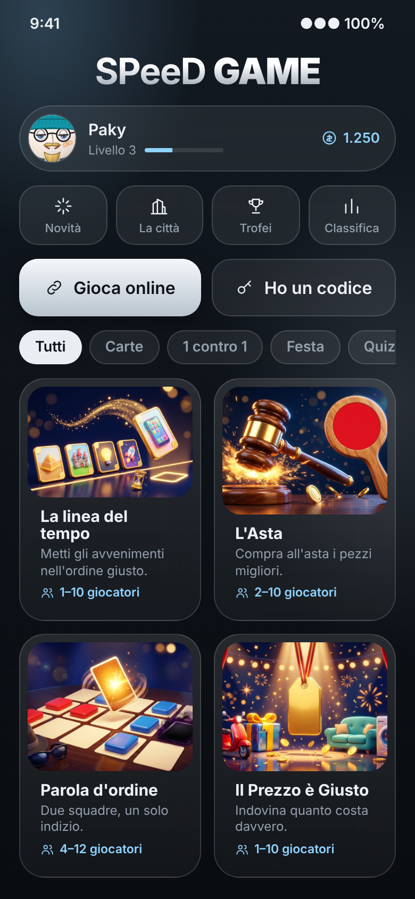
3 · Vetro e metallo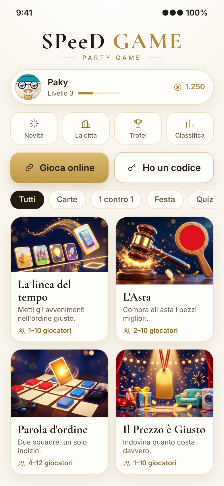
4 · Bianco e oroSaletta d'attesa
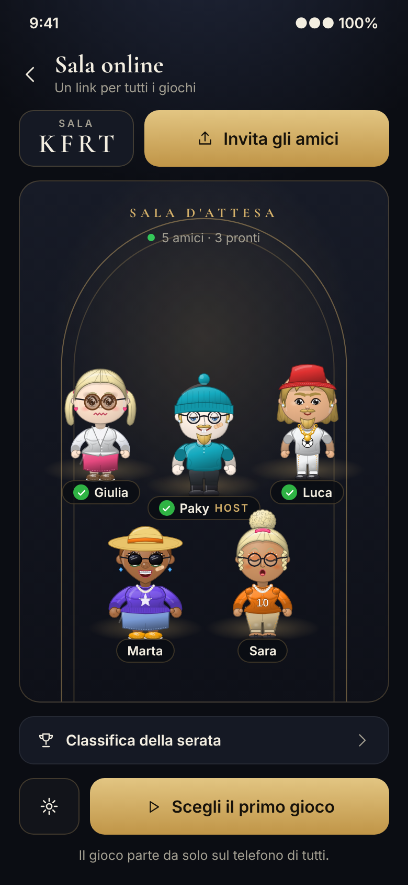
1 · Notte di lusso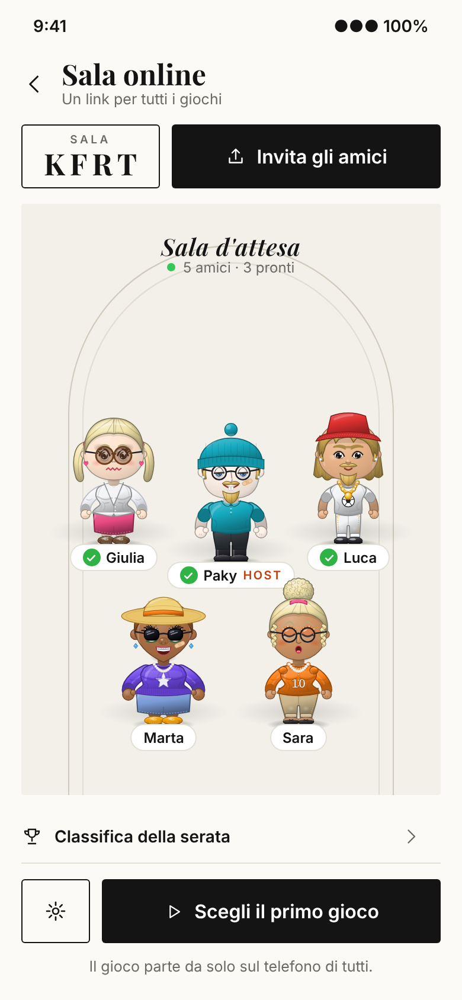
2 · Chiaro editoriale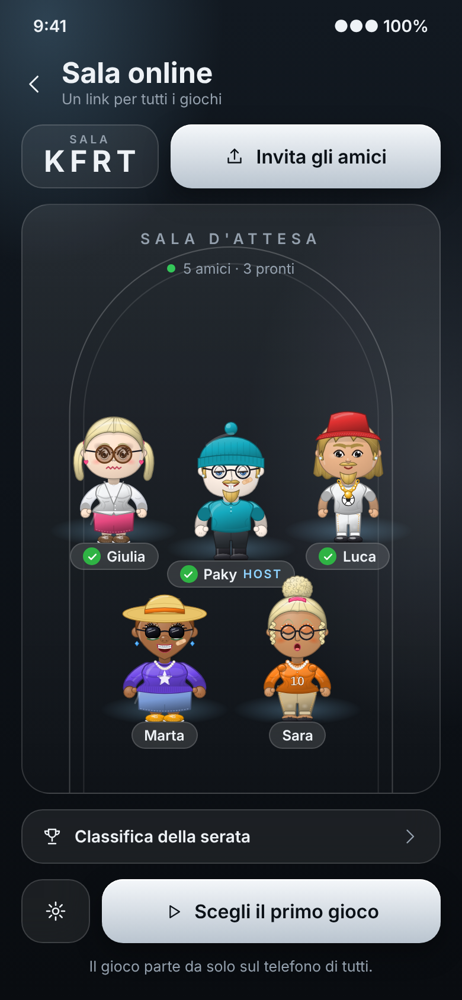
3 · Vetro e metallo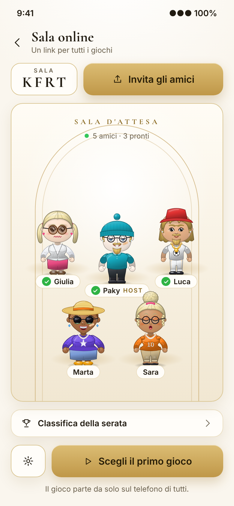
4 · Bianco e oroColori delle squadre e degli avatar dentro ai giochi
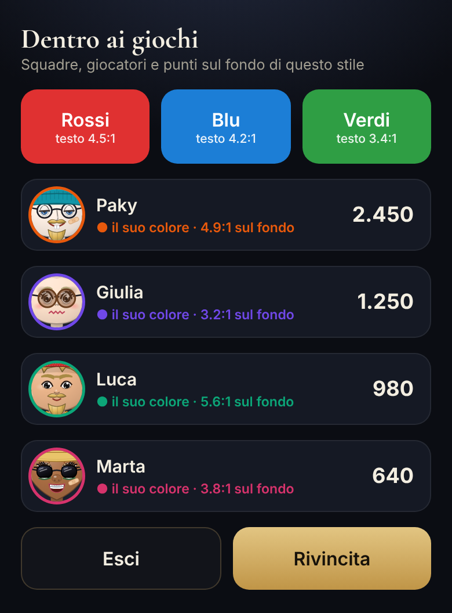
1 · Notte di lusso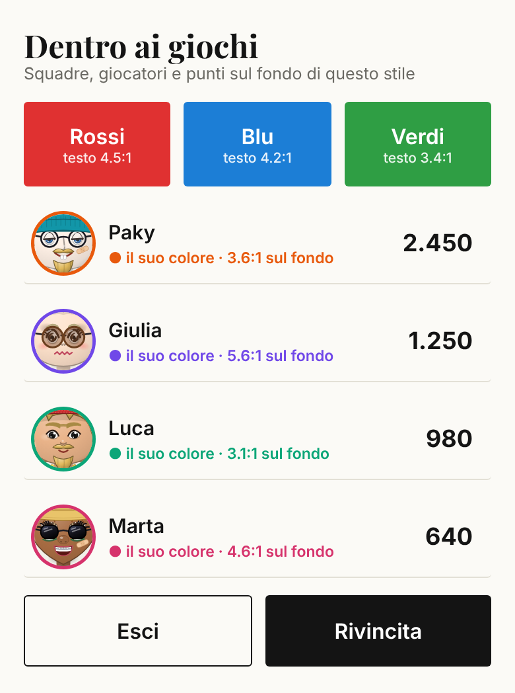
2 · Chiaro editoriale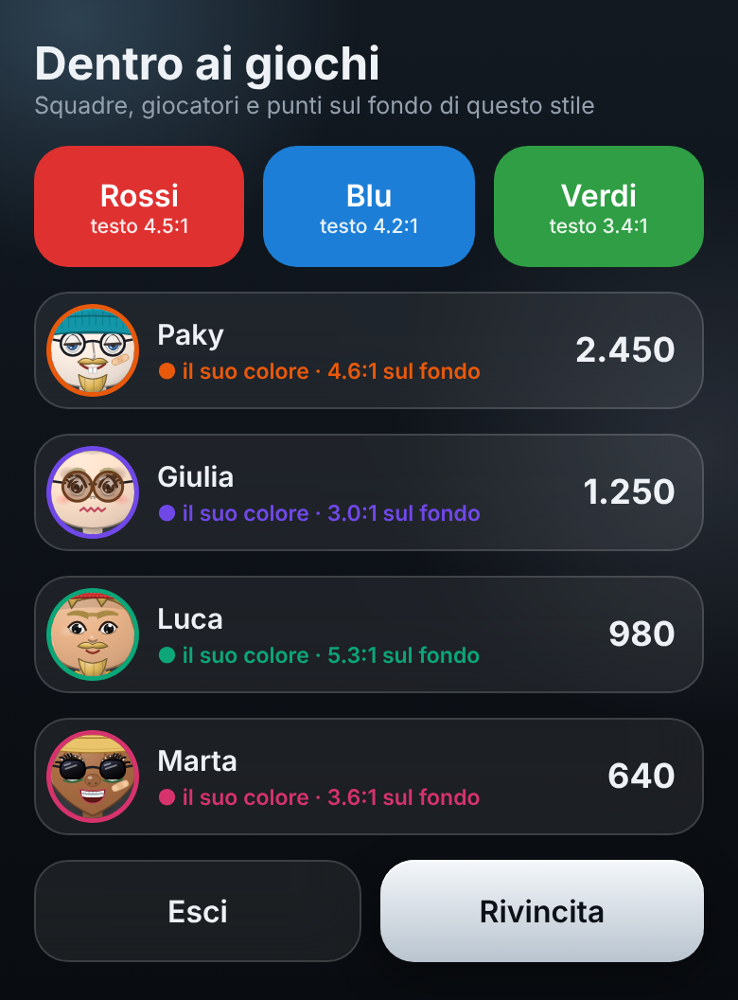
3 · Vetro e metallo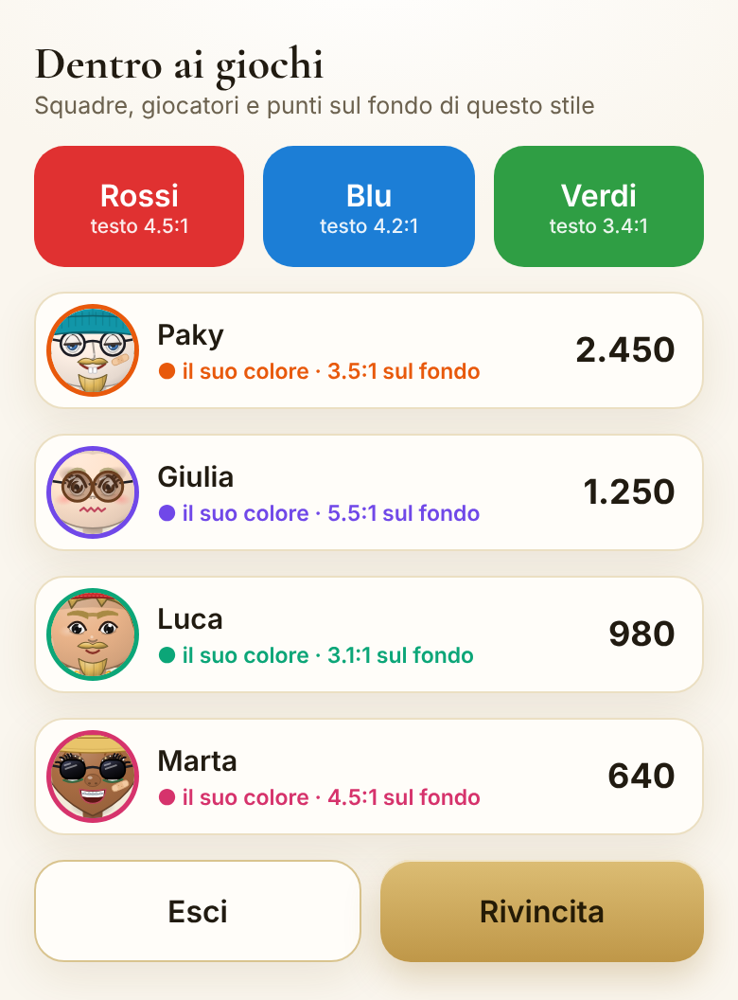
4 · Bianco e oro